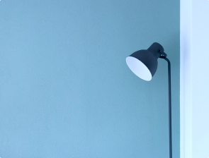
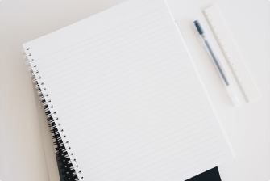

Заголовок новости
Проснувшись однажды утром после беспокойного сна, Грегор Замза обнаружил, что он у себя в постели превратился в страшное насекомое.
Лежа на панцирнотвердой спине, он видел, стоило ему приподнять голову, свой коричневый, выпуклый, разделенный дугообразными чешуйками живот
- На верхушке которого еле держалось готовое вот-вот окончательно сползти одеяло.
- Его многочисленные, убого тонкие по сравнению с остальным телом ножки беспомощно копошились у него перед глазами
- «Что со мной случилось?» – подумал он.
Это не было сном. Его комната, настоящая, разве что слишком маленькая, но обычная комната, мирно покоилась в своих четырех хорошо знакомых стенах. Над столом, где были разложены распакованные образцы сукон – Замза был коммивояжером, – висел портрет, который он недавно вырезал из иллюстрированного журнала и вставил в красивую золоченую рамку.
На портрете была изображена дама в меховой шляпе и боа, она сидела очень прямо и протягивала зрителю тяжелую меховую муфту, в которой целиком исчезала ее рука.
Затем взгляд Грегора устремился в окно, и пасмурная погода – слышно было, как по жести подоконника стучат капли дождя – привела его и вовсе в грустное настроение.
-
«Хорошо бы еще немного поспать и
забыть всю эту чепуху», –
подумал он
- но это было совершенно неосуществимо
- он привык спать на правом боку
- а в теперешнем своем состоянии он никак не мог принять этого положения.
- С какой бы силой ни поворачивался он на правый бок, он неизменно сваливался опять на спину.
- Закрыв глаза, чтобы не видеть своих барахтающихся ног, он проделал это добрую сотню раз и отказался от этих попыток только тогда, когда почувствовал какую-то неведомую дотоле, тупую и слабую боль в боку.
Заголовок третьего уровня
«Ах ты, господи, – подумал он, – какую я выбрал хлопотную профессию! Изо дня в день в разъездах. Деловых волнений куда больше, чем на месте, в торговом доме, а кроме того, изволь терпеть тяготы дороги, думай о расписании поездов, мирись с плохим, нерегулярным питанием, завязывай со все новыми и новыми людьми недолгие, никогда не бывающие сердечными отношения. Черт бы побрал все эт
